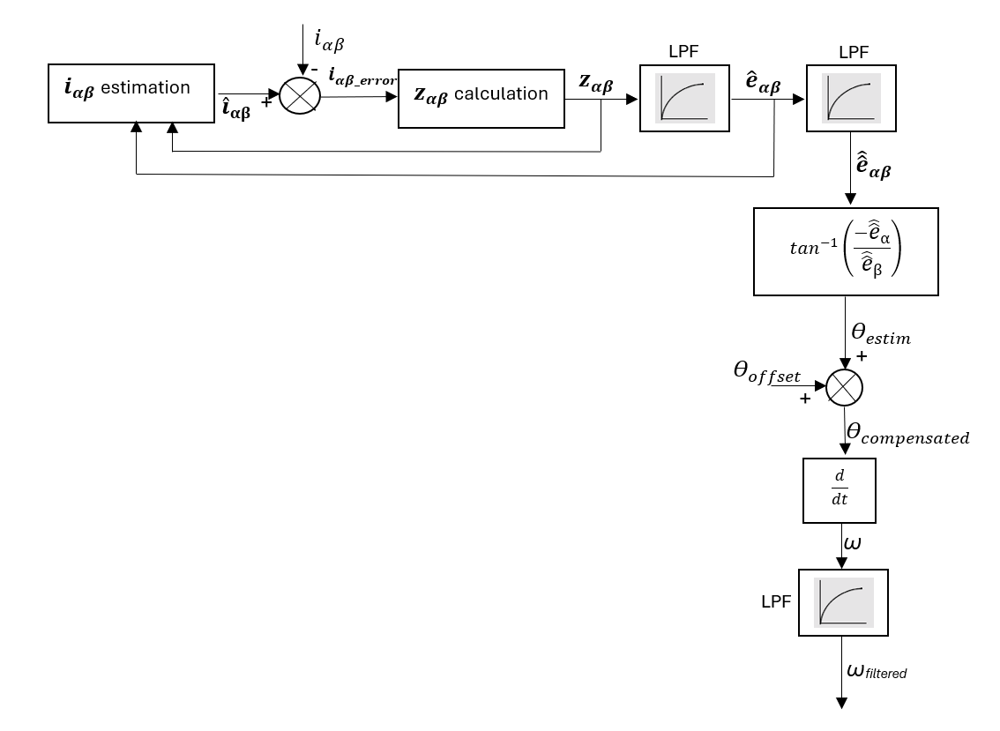
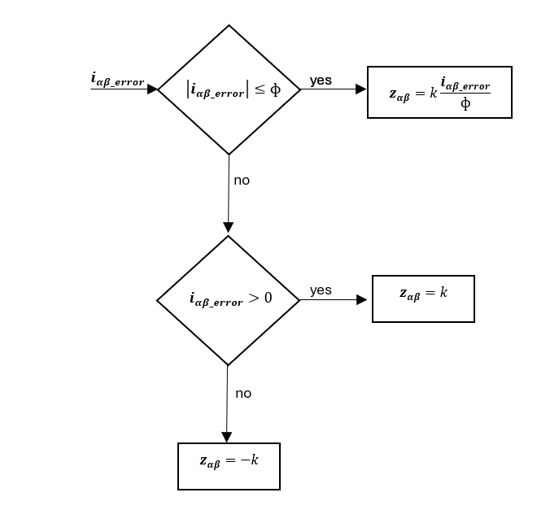

5.4.6. 滑模观测器（SMO）¶
5.4.6.1. 概述¶
滑模观测器（SMO）在此用于 PMSM 的速度和转子角度估计，以实现无传感器控制。该算法使用 PMSM 电流动态特性，并通过滑模增益强制估计电流匹配测量电流。估计的反电动势用于计算位置和速度，如实现方框图所示。实现基于 AN1078，在参数计算方面有一些改进。
5.4.6.2. 实现方框图和描述¶

图 5.75 SMO：概要方框图¶
观测器模型使用电流动态学（5.40）在静止坐标系（\({\alpha\beta}\)域）中。
(5.40)¶\[ \frac{d}{dt}\hat{i}_{\alpha\beta} = \frac{-R}{L}\hat{i}_{\alpha\beta} + \frac{1}{L}(v_{\alpha\beta}-\hat{e}_{\alpha\beta}-z_{\alpha\beta})\]

图 5.76 SMO \(z_{\alpha\beta}\) 计算¶
为了防止可能的抖振，使用了平滑饱和函数代替符号函数。滑模增益（\(k\)）和边界层宽度（\(\Phi\)）使用 Lyapunov 和描述函数方法计算。用于反电动势滤波的低通滤波器（LPF）是自适应滤波器，其截止频率始终等于参考速度。这些滤波器引入了需要补偿的延迟（\(\theta_{offset}\)）。从反电动势估计的位置对时间求导以估计速度。此估计速度再通过另一个自适应 LPF 滤波以获得最终速度。